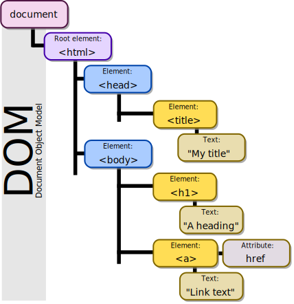

Please review the concepts covered this week.
Testing is a particularly important part of the software development process. It helps you keep the number of bugs to a minimum, understand what exactly is happening in your code, and provides anchor points that help you write and manage large, complex applications. Testing is so important, in fact, that there are entire jobs dedicated to testing, such as a QA/QE engineer. You will encounter several different testing suites as you write tests, such as Jest, Mocha, and Chai.
There are several types of tests you can write as a software developer, some of which are as follows:
In this week, you focused on unit testing. Unit testing refers to a test that tests a small segment of functionality in your code. For example, say you're building a calculator. One piece of functionality is the ability to add numbers. A unit test for that functionality, written using the Jest testing suite, would look something like this:
const sum = require('./sum');
test('adds 1 and 2 to equal 3', () => {
expect(sum(1,2)).toBe(3);
});
Test-driven development (TDD) is a special procedure for writing tests into your codebase first, and then writing code to pass the test. TDD helps guard against bugs, improve your overall speed when writing code, and manage a large codebase with greater ease.
The basic order of operations in TDD are as follows:
While your introductions to git and GitHub thus far have not meant to have been exhaustive, the basic workflows you've encountered so far will be seen frequently when you write software.
To collaborate with others on GitHub, you can stick to a following basic, standard workflow:
There are more aspects to this, such as branching, or even slightly different approaches such as rebasing, but for now, this is a basic workflow you can practice and become familiar with.
The DOM is a cross-platform browser interface that treats an HTML or XML document as a tree structure, where each node is treated as an object that is a part of a document. So, for example, in an HTML document that looks like this:
<body>
<h1 id="header">Hello, World!</h1>
<p id="paragraph"> How are you doing today?</p>
</body>
The
'body' tag is treated as its own element, that contains two other elements, namely an <h1> element and a
<p> element. These elements have text inside them, but the texts themselves are not
elements, but are merely what the <h1> and <p> elements contain.
You can use the DOM to hook onto these separate elements and manipulate the data inside them. So, for example, if
you want to change the text inside the <h1> element, you can do so by hooking onto that particular
node via its id, like so:
var element = document.getElementById(header);
element.innerHTML = "Goodbye!"
Here, JavaScript to dynamically update the contents of the HTML node, because the DOM has traversed your HTML document and made nodes for each object in your HTML files.
Here is a great visual of the DOM traversing an HTML document in action.
Birger Eriksson - Own work CC BY-SA 3.0